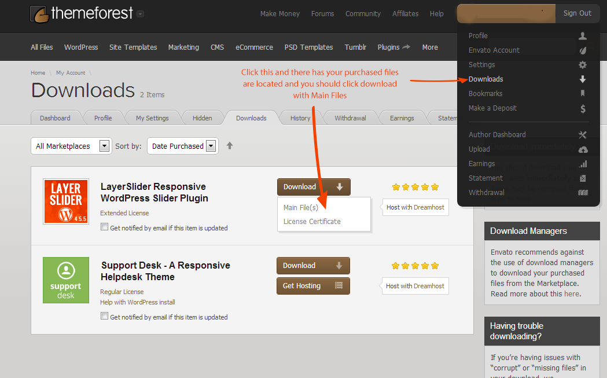
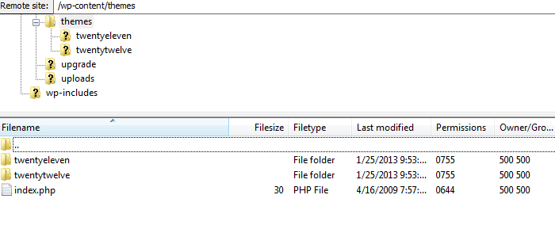

Note: This is only example picture for my own Dashboard. You can go to your own purchased account in themeforest. Then download Main files archive.
Now you have your theme files with Zip type and you need to extract this any unzip program (Use Winrar). Extracted files included Theme Documentation and PSD files and our themes with child themes.
Please unzip our only theme file and that will be named like this cleanium.zip, Now please access to your hosting with FTP (Example: Filezilla) then go to youriste/wp-content/themes directory and paste our theme.

The hard part is now out of the way. The next and final step is to activate the theme within your WordPress admin panel.
Finished after step 2 now you can go to your Wordpress Website Dashboard then go to Appearance-Themes section and activate our theme. Now you have only left to insert Demo Data insert if you are doing this step you have our demo website like web is ready to your control.
Go through your dashboard and click TOOLS-Import. If you are not installed this plugin before you need to click install this plugin one time only. Our Main archive files (Theme ZIP) has contained XML Demo file. You need to insert this xml to Import Wordpress Plugin.
Now every thing has ok you need to wait little bit longer Please be Patient!
[events number="4"]
[teams number="4"]
[videos number="4"]
[audios number="4"]
[photo-gallery]
[blog]
[mt_playlist id="number"]
Start Here
Once again, thank you so much for purchasing this theme. As I said at the beginning, I'd be glad to help you if you have any questions relating to this theme. No guarantees, but I'll do my best to assist. If you have a more general question relating to the themes on ThemeForest, you might consider visiting the forums and asking your question in the "Item Discussion" section.